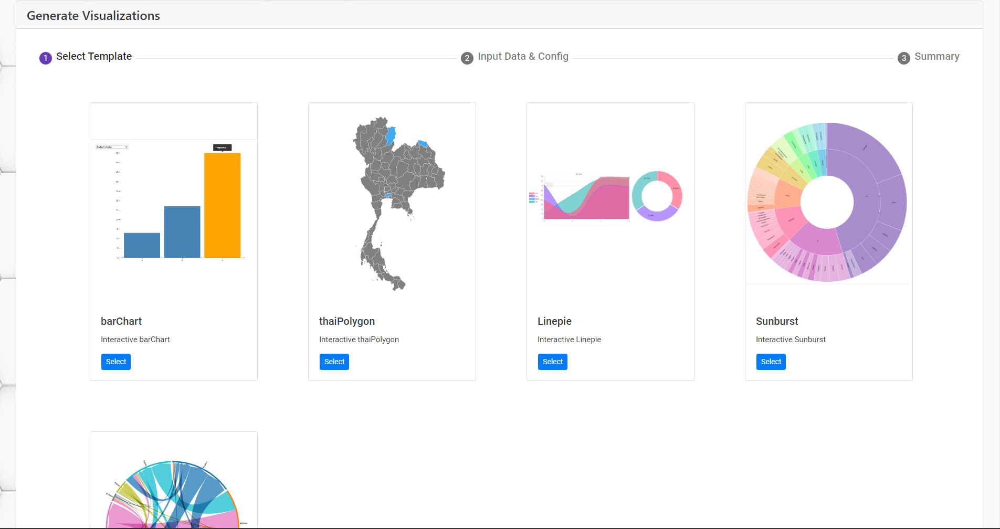
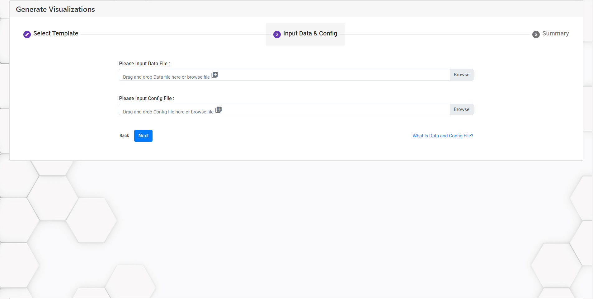
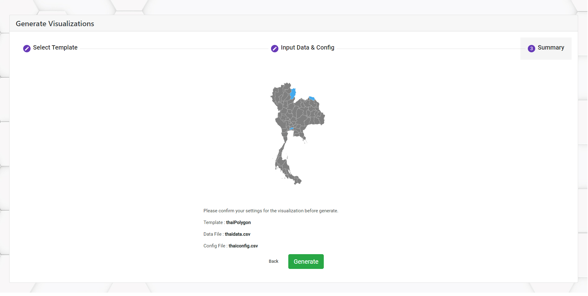
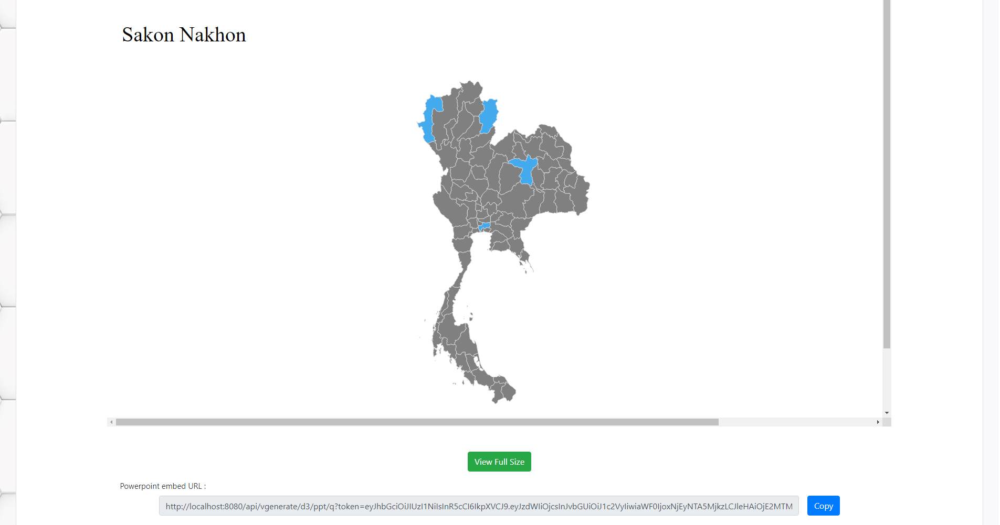

<div class="col-md-12 mt-5">
    <div class="container-fluid mb-4">
        <div class="card my-5">
            <div class="card-header">
                <div class="row mx-2">
                    <h4>Tutorial</h4>
                    <div class="ml-auto">
                        <div class="btn-group btn-group-toggle" data-toggle="buttons">
                            <label class="btn btn-secondary active">
                                <input type="radio" name="options" id="option1" autocomplete="off" checked> ENG
                            </label>
                            <label class="btn btn-secondary">
                                <input type="radio" name="options" id="option2" autocomplete="off"
                                    (change)="handleChange()"> TH
                            </label>
                        </div>
                    </div>
                </div>
            </div>


            <div class="card-body">
                <div class="offset-md-2 col-md-8">
                    <h5>Overview</h5>
                    <ul>
                        <li><a class="text-primary" (click)="scroll(first)"><u>Step-by-Step guide</u></a>
                            <ul>
                                <li><a class="text-primary" (click)="scroll(first_1)">1. Select your visualization
                                        template.</a></li>
                                <li><a class="text-primary" (click)="scroll(first_2)">2. Input data and configuration
                                        files.</a></li>
                                <li><a class="text-primary" (click)="scroll(first_3)">3. Summary.</a></li>
                                <li><a class="text-primary" (click)="scroll(first_4)">Result</a></li>
                            </ul>
                        </li>
                        <li *ngIf="templates">
                            <a class="text-primary" (click)="scroll(second)"><u>Data and config file example</u></a>
                            <ul *ngIf="templates">
                                <li *ngFor="let template of templates"><a class="text-primary"
                                        (click)="scroll(second)">{{template.TemplateName}}</a></li>
                            </ul>
                        </li>
                    </ul>
                    <p class="my-5"><strong>*note*</strong> You have to <a routerLink="/account/register"><u>register</u></a>  and <a routerLink="/account/login"><u>log in</u></a> to visualization platform to start creating visualization.</p>
                    <hr>

                    <div #first>
                        <h4 class="mt-5">Step-by-Step guide</h4><br>
                        <p>Here is a step-by-step guide on how to create a visualization on visualization platform.</p>

                        <div class="my-5" #first_1>
                            <p class="mt-5"><strong>1. Select your visualization template.</strong><br><br>
                                &nbsp;&nbsp;&nbsp;&nbsp;Here, you can choose one of the visualization templates. Click
                                "Select" to move to the next step.</p>
                            <figure class="mb-5">
                                
                                <figcaption class="text-center mt-3">Step 1 : Select your visualization template.
                                </figcaption>
                            </figure>
                        </div>
                        <hr>

                        <div class="my-5" #first_2>
                            <p class="mt-5"><strong>2. Input data and configuration files.</strong><br><br>
                                &nbsp;&nbsp;&nbsp;&nbsp;In this step, we will request you to input a data file and a
                                config file.
                                <br><br>
                                &nbsp;&nbsp;&nbsp;&nbsp;<strong>Data file </strong>is a CSV or JSON file which contains
                                your
                                data to be displayed in the visualization. <br>
                                &nbsp;&nbsp;&nbsp;&nbsp;<strong>Config file </strong>is a CSV or JSON file which
                                contains configurations e.g. height, width, color, etc. <br><br></p>
                                <p *ngIf="templates">You can download each visualization data and config file example template <a
                                    (click)="scroll(second)"><u>Here</u></a>.
                            </p>
                            <figure class="mb-5">
                                
                                <figcaption class="text-center mt-3">Step 2 : Input data and configuation files.
                                </figcaption>
                            </figure>
                        </div>
                        <hr>

                        <div class="my-5" #first_3>
                            <p><strong>3. Summary.</strong><br><br>
                                &nbsp;&nbsp;&nbsp;&nbsp;You are all set! In this step, you can check your settings for
                                the visualization. <br>
                                &nbsp;&nbsp;&nbsp;&nbsp;You can press the "Generate" button to start generating the
                                visualization.
                            </p>
                            <figure>
                                
                                <figcaption class="text-center mt-3">Step 3 : Summary.</figcaption>
                            </figure>
                        </div>
                        <hr>

                        <div class="my-5" #first_4>
                            <p><strong>Result</strong><br><br>
                                &nbsp;&nbsp;&nbsp;&nbsp;You successfully generated your visualization! Here is the
                                result. You can view your visualization and use its interactive function now. <br>
                                Click "View Full Size" to see the original size of the visualization. <br><br>
                                You also can use the link below to use your visualization in your Microsoft PowerPoint
                                presentation.
                            </p>
                            <figure>
                                
                                <figcaption class="text-center mt-3">Result</figcaption>
                            </figure>
                        </div>
                        <hr>
                    </div>

                    <div #second >
                        <div class="my-5" *ngIf="templates">
                            <h4>Data and config file example</h4>
                            <table class="table table-striped my-3">
                                <thead>
                                    <tr>
                                        <th style="width: 50%">Template</th>
                                        <th style="width: 50%">example files</th>
                                    </tr>
                                </thead>
                                <tbody>
                                    <tr *ngFor="let template of templates">
                                        <td>{{template.TemplateName}}</td>
                                        <td *ngIf="template.TemplateName!='Sunburst'">
                                            <a
                                                href="{{apiUrl}}/static/example-files/{{template.TemplateName}}-data.csv">{{template.TemplateName}}-data.csv</a><br>  
                                            <a
                                                href="{{apiUrl}}/static/example-files/{{template.TemplateName}}-config.csv">{{template.TemplateName}}-config.csv</a>
                                        </td>
                                        <td *ngIf="template.TemplateName == 'Sunburst'">
                                            <a
                                            href="{{apiUrl}}/static/example-files/{{template.TemplateName}}-data.json">{{template.TemplateName}}-data.json</a><br>
                                            <a
                                                href="{{apiUrl}}/static/example-files/{{template.TemplateName}}-config.csv">{{template.TemplateName}}-config.csv</a>
                                        </td>
                                    </tr>
                                </tbody>
                            </table>
                        </div>

                    </div>
                </div>
            </div>
        </div>
    </div>
</div>